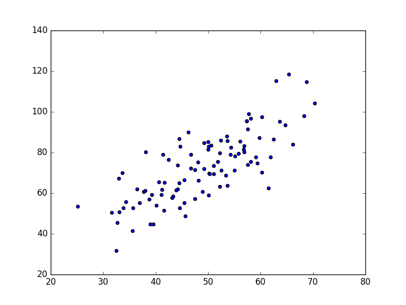
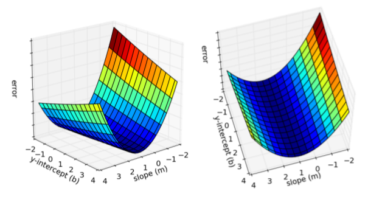
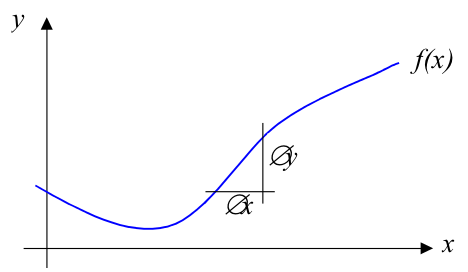
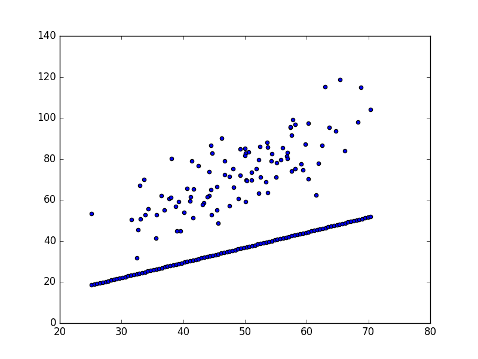
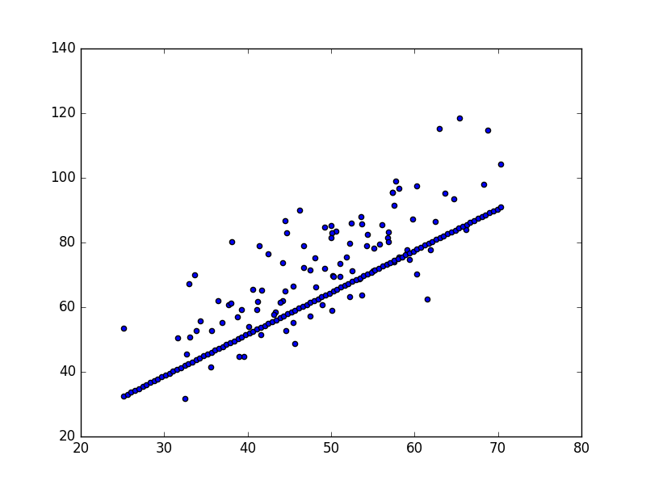
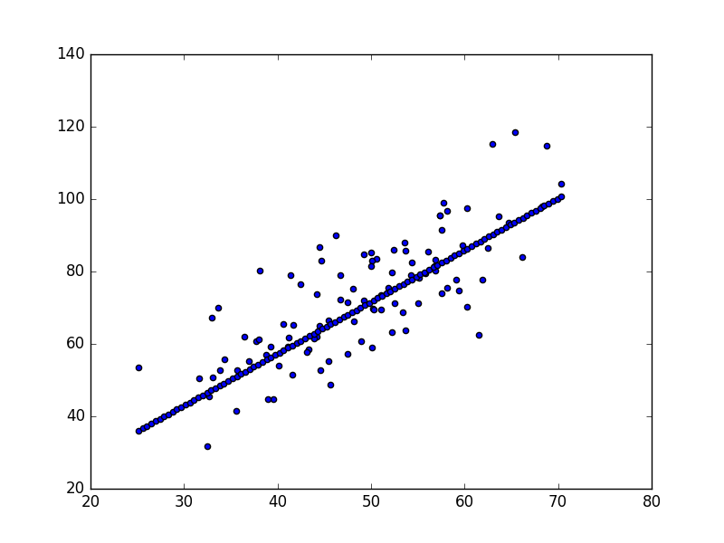
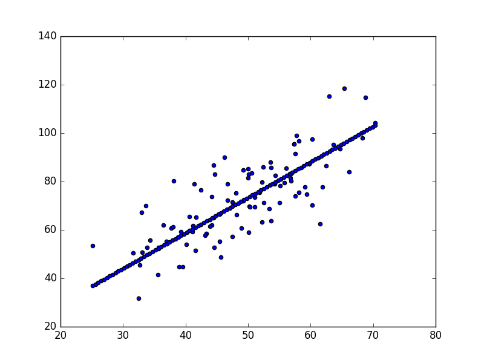

Pek çok farklı probleme çözüm sağlayan bir teknik gradyan inişidir. Ne yazık ki bilgisayar bilim lisans seviyesinde bu teknik genellikle öğretilmiyor. Bu yazıda Gİ'nin hepimizin bildiği bir problemi, lineer regresyonu çözmek için nasıl kullanılacağını anlatacağım [1].
Teorik seviyede Gİ bir fonksiyonu minimize etmeye yarar. Elde bazı parametreler üzerinden tanımlı bir fonksiyon vardır, ve Gİ bir başlangıç değerinden başlayarak azar azar o parametreleri değiştirerek fonksiyonun minimal olduğu yeri bulmaya uğraşır. Bu azar azar, adım atılarak yapılan minimizasyon Calculus sayesindedir, fonksiyonun gradyanının negatif yönünde adım atılarak mümkün olur. Bazen bu matematiksel açıklamanın pratik kullanımı nasıl olur görmek zor oluyor; Örnek olarak bir veriye lineer bir çizgi / model uyduralım.
Basit bir tanım yaparsak lineer regresyonun amacı eldeki bir veri kümesine düz çizgi uydurmaktır. Veri alttaki gibi olabilir,
points = np.genfromtxt("data.csv", delimiter=",")
plt.scatter(points[:,0],points[:,1])
plt.savefig('vision_90fitting_04.png')

Üstteki veriyi düz çizgi olarak modellemek istiyoruz, bunun için lise matematiğinden bilinen $y = mx + b$ formülünü kullanacağız, $m$ eğim (slope), $b$ ise kesi (intercept), yani y-ekseninin kesildiği yer. Veriye uyan en iyi çizgiyi bulmak demek en iyi $m,b$ değerlerini bulmak demek.
Bunu yapmanının standart yolu bir hata fonksiyonu tanımlamak (bazen bedel fonksiyonu da deniyor). Hata fonksiyonu bir çizginin ne kadar "iyi" olduğunu ölçebilen bir fonksiyondur, bir $m,b$ çiftini alacak, veriye bakacak, ve bize uyumun ne kadar iyi olduğunu bir hata değeri üzerinden raporlayacak. Hata değeri hesabı için elimizdeki verideki tüm $x,y$ değerlerine bakacağız, ve bunu yaparken her veri $y$ değeri ile, yine veri $x$'i üzerinden hesapladığımız $mx+b$ değeri arasındaki farka bakacağız; daha doğrusu farkın karesini alacağız, ve her veri noktası için hesaplanan tüm bu kare hesaplarını toplayacağız. Kare alınıyor, çünkü bu hatayı pozitif hale çevirmemizi sağlıyor, bir diğer fayda tabii kare fonksiyonun türevi alınabilir olması (kıyasla mutlak değer fonksiyonu işleri daha karıştırırdı). Pozitif bir hata yeterli, çünkü hata yapılmışsa alttan mı üstten mi olduğu bizi ilgilendirmiyor. Hata $E$ hesabı şöyle,
Matematiksel olarak
$$ E_{(m,b)} = \frac{1}{N} \sum _{i=1}^{N} (y_i - (mx_i + b))^2$$
# y = mx + b
# m is slope, b is y-intercept
def compute_error_for_line_given_points(b, m, points):
totalError = 0
for i in range(0, len(points)):
x = points[i, 0]
y = points[i, 1]
totalError += (y - (m * x + b)) ** 2
return totalError / float(len(points))
Veriye daha iyi uyan çizgiler (ki "daha iyi"nin ne olduğu hata fonksiyonumuz üzerinden tanımlı) daha az hata değerleri anlamına gelecektir. O zaman, eğer hata fonksiyonunu minimize edersek, veriye uyan iyi çizgiyi bulacağız demektir. Hata fonksiyonumuz iki parametreli olduğu için onu iki boyutlu bir yüzey olarak grafikleyebiliriz,

Bu iki boyutlu yüzey üzerindeki her nokta değişik bir çizgiyi temsil ediyor. Yüzeyin alt düzlemden olan yüksekliği o çizgiye tekabül eden hata. Gördüğümüz gibi bazı çizgiler bazılarından daha az hataya sahip (yani veriye daha iyi uymuş). Gradyan inişi ile arama yaptığımız zaman bu yüzeyin herhangi bir noktasından başlayacağız, ve yokuş aşağı inerek hatası en az olan çizgiyi bulacağız.
Hata fonksiyonu üzerinde Gİ işletmek için önce fonksiyonun gradyanını hesaplamamız lazım. Gradyan bizim için nerede olursak olalım her zaman dip noktasını gösteren bir pusula görevini görüyor. Gradyan hesabı için hata fonksiyonunun türevi alınmalı. Hata fonksiyonunun $m,b$ adında iki tane parametresi olduğuna göre bu iki parametrenin her biri için ayrı ayrı kısmi türev almamız lazım. Bu türevler,
$$ \frac{\partial E}{\partial m} = \frac{2}{N} \sum _{i=1}^{N} -x_i (y_i - (mx_i+b)) $$
$$ \frac{\partial E}{\partial b} = \frac{2}{N} \sum _{i=1}^{N} -(y_i - (mx_i+b)) $$
Artık Gİ işletmek için gerekli tüm araçlara sahibiz. Aramayı herhangi bir $m,b$ noktasından (herhangi bir çizgi) başlatırız, ve Gİ yokuş aşağı en iyi çizgi parametrelerine doğru gider. Her döngü $m,b$ değerlerini bu inişe göre günceller (dikkat inen parametreler değil, hatada inilirken bu inişe tekabül eden $m,b$ değerleri), ki bu sayede döngünün bir sonraki adımındaki hata bir öncekine göre azalmış olur.
Matematiğe biraz daha yakından bakalım [2]. Türev almak, türeve göre adım atmak bir fonksiyonunun minimum noktasını bulmamızı nasıl sağlıyor? Basit bir fonksiyon $f(x)$'i düşünelim,

Gradyan, ya da belli bir $x$ noktasındaki değişim oranı $\oslash y / \oslash x$ ile yaklaşıksallanabilir (çoğunlukla literatur $\Delta$ sembolünü kullanır, [2] $\oslash$ kullanmış, önemli değil). Ya da bu yaklaşıksallığı şöyle yazabiliriz,
$$ \frac{\partial f}{\partial x} = \lim_{\oslash \to 0} \frac{\oslash y}{\oslash x} = \lim_{\oslash \to 0} \frac{f(x + \oslash x) - f(x)}{\oslash x} $$
ki bu ifade $f(x)$'in $x$'e göre kısmi türevi olarak bilinir. Üstteki yöntem ile sembolik olarak pek çok ifadenin türevini almayı biliyoruz, mesela $ax^2$ için $2ax$, vs.
Şimdi elimizde bir $f(x)$ olduğunu düşünelim, ve $x$'i öyle bir şekilde değiştirmek istiyoruz ki $f(x)$ minimize olsun. Ne yapacağımız $f(x)$'in gradyanının ne olduğuna bağlı. Üç tane mümkün durum var:
Eğer $\frac{\partial f}{\partial x} > 0$ ise $x$ artarken $f(x)$ artar, o zaman $x$'i azaltmalıyız.
Eğer $\frac{\partial f}{\partial x} < 0$ ise $x$ artarken $f(x)$ azalır, o zaman $x$'i arttırmalıyız.
Eğer $\frac{\partial f}{\partial x} = 0$ ise $f(x)$ ya minimum ya da maksimum noktasındadır, o zaman $x$'i olduğu gibi bırakmalıyız.
Özet olarak $x$'i alttaki miktar kadar azaltırsak $f(x)$'i de azaltabiliriz,
$$ \oslash x = x_{yeni} - x_{eski} = -\eta \frac{\partial f}{\partial x}$$
ki $\eta$ ufak bir pozitif sabittir, $x$'i değiştirirken bu atılan adımın büyüklüğünü dışarıdan ayarlayabilmemizi sağlar, değişimin hangi yönde olacağını $\frac{\partial f}{\partial x}$ belirtiyor zaten. Bu formülü ardı ardına kullanırsak, $f(x)$ yavaş yavaş minimum noktasına doğru "inecektir", bu yönteme gradyan inişi minimizasyonu adı verilmesinin sebebi de budur.
Örneğimize dönelim,
def step_gradient(b_current, m_current, points, eta):
b_gradient = 0
m_gradient = 0
N = float(len(points))
for i in range(0, len(points)):
x = points[i, 0]
y = points[i, 1]
b_gradient += -(2/N) * (y - ((m_current * x) + b_current))
m_gradient += -(2/N) * x * (y - ((m_current * x) + b_current))
new_b = b_current - (eta * b_gradient)
new_m = m_current - (eta * m_gradient)
return [new_b, new_m]
eta = 0.0001
initial_b = 0 # initial y-intercept guess
initial_m = 0 # initial slope guess
num_iterations = 8
print "Starting gradient descent at b = {0}, m = {1}, error = {2}".format(initial_b, initial_m, compute_error_for_line_given_points(initial_b, initial_m, points))
print "Running..."
b = initial_b
m = initial_m
xx = np.linspace(np.min(points[:,0]),np.max(points[:,0]), 100)
for i in range(num_iterations):
b, m = step_gradient(b, m, np.array(points), eta)
if i % 2 == 0:
print i, b,m
yy = m * xx + b
plt.scatter(points[:,0],points[:,1])
plt.hold(True)
plt.scatter(xx,yy)
plt.hold(False)
plt.savefig('grad_desc_%d' % i)
print "After {0} iterations b = {1}, m = {2}, error = {3}".format(num_iterations, b, m, compute_error_for_line_given_points(b, m, points))
Starting gradient descent at b = 0, m = 0, error = 5565.10783448
Running...
0 0.0145470101107 0.737070297359
2 0.0255792243213 1.29225466491
4 0.0284450719817 1.43194723238
6 0.029256114126 1.46709461772
After 8 iterations b = 0.0294319691638, m = 1.47298329822, error = 112.737981876
   
Optimal $m,b$ değerleri bulundu. $m=-1, b=0$'da başladık ve optimal sonucu
bulduk. Değişken eta (yani $\eta$) adım büyüklüğü demiştik, dikkat eğer
adım çok büyük seçilirse minimum "atlanabilir", yani varış noktası
kaçırılabilir. Eğer $\eta$ çok küçük ise minimuma erişmek için çok vakit
geçebilir. Ayrıca Gİ'nin doğru işlediğini anlamanın iyi yollarından birisi her
döngüde hatanın azalıp azalmadığına bakmaktır.
Bu basit bir örnekti, fakat bir bedel fonksiyonunu minimize edecek parametre değişimlerini yapma kavramı yüksek dereceli polinomlarda, ya da diğer Yapay Öğrenim problemlerinde de işe yarıyor.
Gİ ile akılda tutulması gereken bazı konular:
1) Dışbükeylik (Convexity): Üstteki problemde sadece bir tane minimum vardı, hata yüzeyi dışbükeydi. Nereden başlarsak başlayalım, adım atarak minimuma erişecektik. Çoğunlukla durum böyle olmaz. Bazı problemlerde yerel minimumda takılı kalmak mümkün olabiliyor, bu problemleri aşmak için farklı çözümler var, mesela Rasgele Gradyan İnişi (Stochastic Gradient Descent) kullanmak gibi.
2) Performans: Örnekte basit bir Gİ yaklaşımı kullandık, çizgi arama (line search) gibi yaklaşımlarla döngü sayısının azaltmak mümkün olabiliyor.
3) Yakınsama (Convergence): Aramanın bittiğinin kararlaştırılmasını kodlamadık, bu çoğunlukla hata döngüsündeki değişimlere bakılarak yapılır; eğer hatadaki değişim belli bir eşik değerinden daha küçük ise, gradyanın sıfır olduğu yere yaklaşılmış demektir, ve arama durdurulabilir.
Not: Lineer regresyon tabii ki direk, tek bir adımda çözülebilen bir problem. Gİ'yi burada bir örnek amaçlı kullandık.